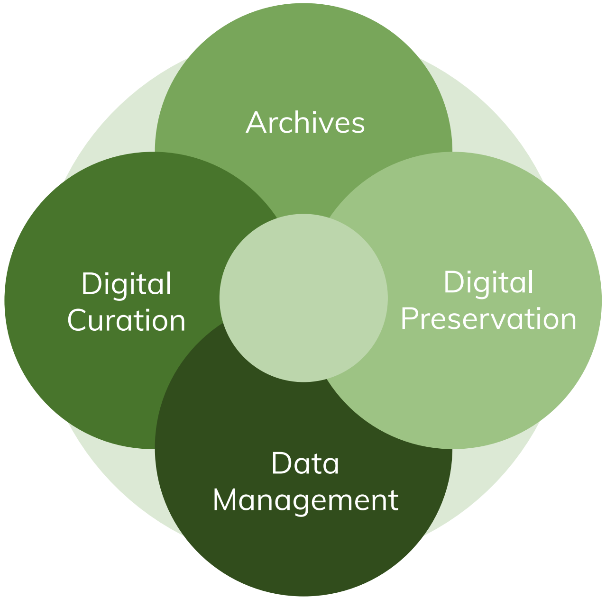
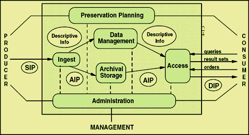
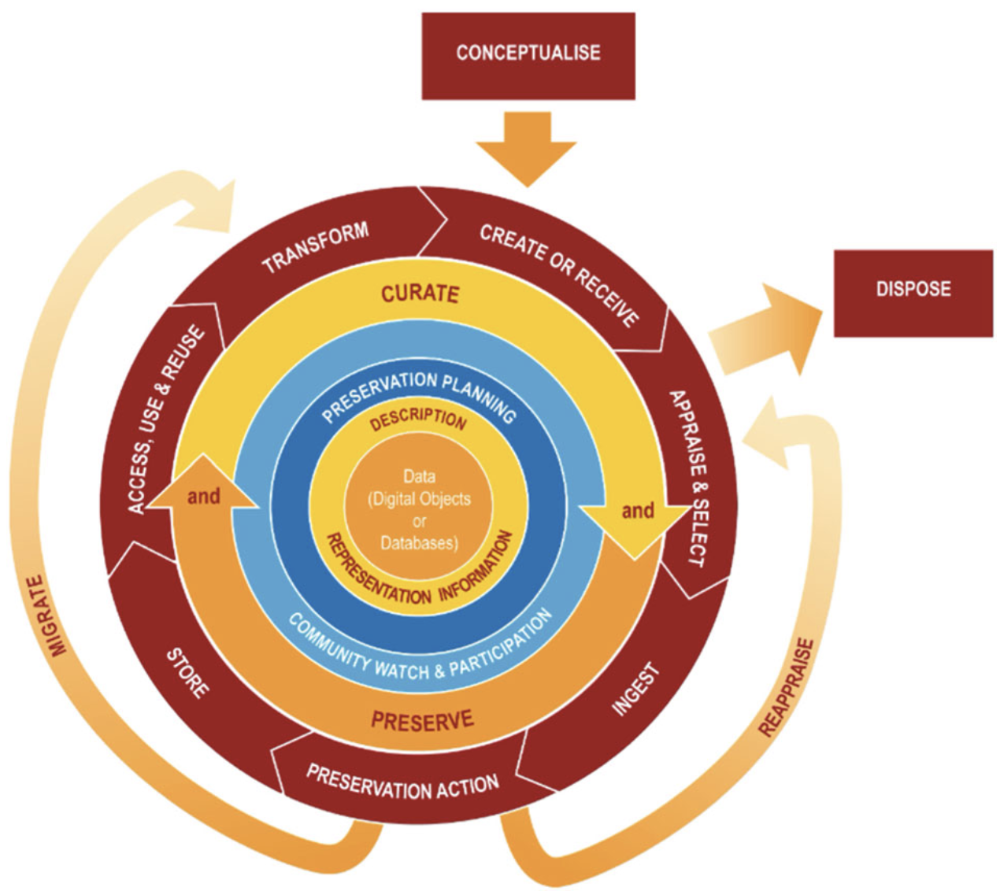
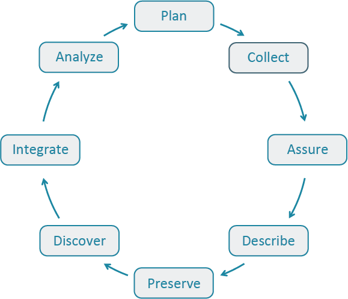
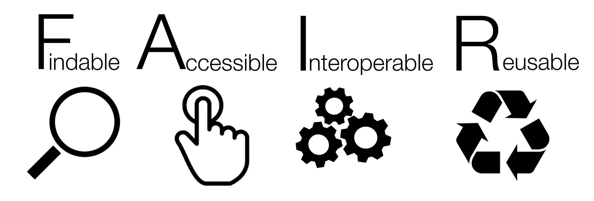
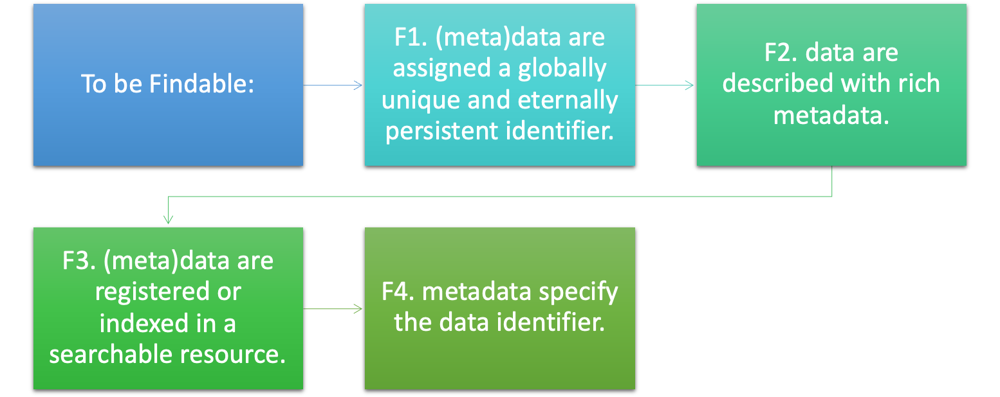
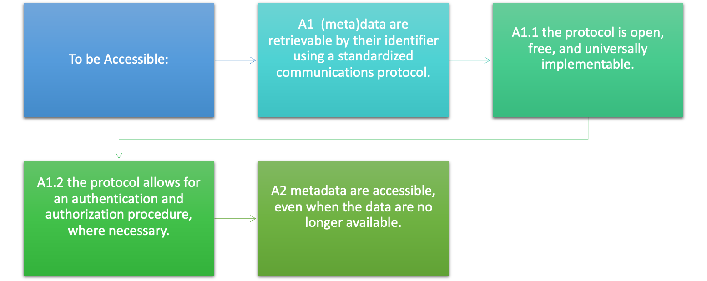
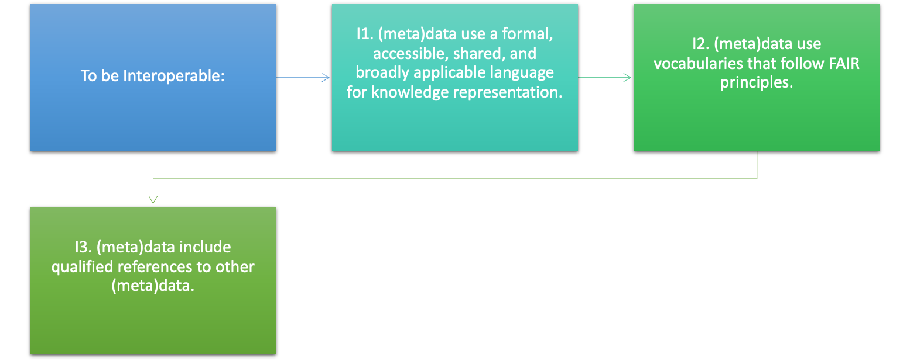
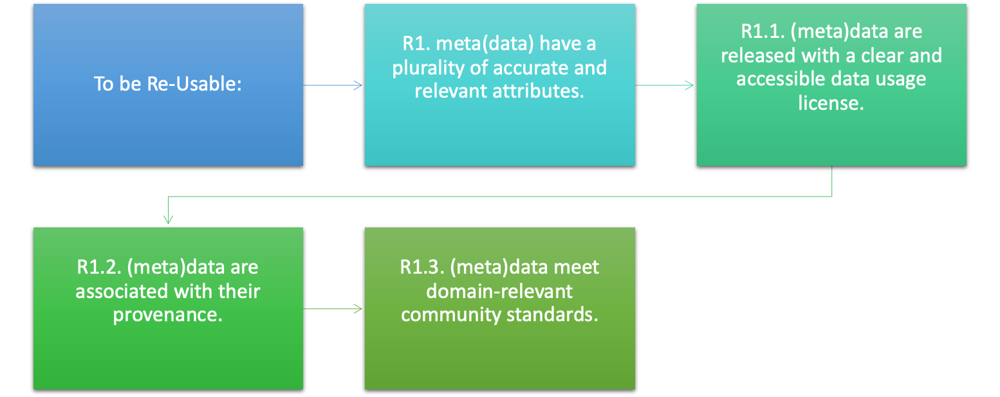
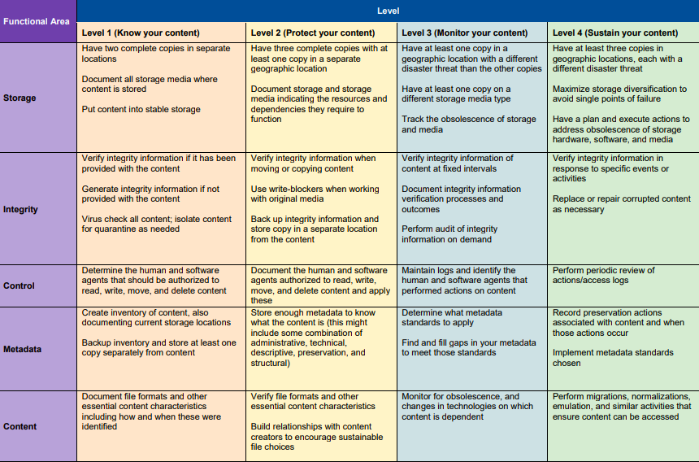

Data Life Cycle Models
LIS 4/5493: Data Stewardship
Introduction
Communities of Practice
What is the Value of Models and Standards?
Frameworks provide basic guidance to organizations seeking to expand work in these areas
Many decisions around data curation and archival work are highly dependent on specific conditions within a given organization
Decisions, Decisions, and More Decisions!
Open source vs. commercial software
Cloud vs. locally hosted
Consortial models vs. in-house services
Metadata standards
Digital Curation LifeCycle Models
Open Archival Information System (OAIS)
Digital Curation Centre Lifecycle
DataONE Data Life Cycle
FAIR Data Principles
FAIR Principle: Findable
FAIR Principle: Accessible
FAIR Principle: Interoperable
FAIR Principle: Re-Usable
What’s In Common?
These models are all descriptive tools to understand digital curation and preservation needs, assist in planning and evaluating different solutions
They are not checklists or how-to guides
Digital Curation Standards
TRAC/ISO 16363
Trustworthy Repositories Audit and Certification
Based on OAIS Reference Model
ISO 16363 accepted in 2012
Section A- Organizational
- Infrastructure
Section B- Digital Object
- Management
Section C- Technologies
- Technical
- Infrastructure
- Security
CoreTrustSeal
Peer-reviewed, international standard for digital preservation
Evaluation based on organizational answers to 16 requirements
Focus on organizational and infrastructural issues rather than technology
NDSA Levels of Preservation
Best Practices
- Best practices are developed within a community of practice, a discipline, a group with a common purpose
- Best practices are one way to assure that data are organized, described and documented consistently
- Best practices make it possible to use, analyze, share, re-use data by researchers and others
- Best practices may also be required by institutions, funding agencies, publishers, businesses, etc.
- There are many sets of best practices developed by disciplinary communities but science disciplines are leading the way
- Best practices tend to be extensible to many contexts and projects
Best Practices: Individuals
- Best practices make it possible for everyone working on a project to collect, find, understand, and analyze the data
- Well documented data makes it quicker and easier to locate and clean the data
- Properly documented data is easier to share with others
- It saves time and money if data is organized consistently
- Well documented data makes it easier to prove results and to show how results were reached
- Following best practices is usually required by funding agencies, repositories, publishers, etc.
Best Practices: Institutions and Funders
- Some institutions have developed data policies for documenting, describing, storing, sharing, and re-using data https://libraries.ou.edu/content/research-data-management
- Intellectual property issues may be resolved with a comprehensive data policy
- Institutions may have policies and best practices for retention of data (what to keep, how long to keep, where to keep, backups, etc.), or where and by whom data can be shared and re-used
- Funders may require discipline-specific data organization, metadata schemes, data sharing and retention, data re-use requirements (required within data management plans), and may require all data to be publicly accessible
Best Practices: Publishers and Repositories
- Many publishers may require submission of the data set as part of the publication and may store it in a publicly accessible data repository
- Intellectual property issues may be resolved with a comprehensive data policy (who owns the data in the publication and data store)
- Publishers and repositories may have their own specifications on how data are described and documented, metadata scheme to use, and access requirements
- Repositories may require additional preparation of data, such as storing in an easily shareable data format, specific metadata scheme, cleaning of data, etc. OU’s is called ShareOK available at:
Concluding Thoughts
- This week you learned more about the data life cycle through the models in the readings and this lecture. Take some time to think about the models might apply to your own context AND how you might change or adapt them for your purposes.
- Also consider the role that best practices play in data stewardship and how the FAIR Guiding Principles may be used in multiple contexts.
- Next week we will begin the more practical topics of data stewardship, beginning with how data stewards support the research stage of Collecting Data by organizing, structuring, and storing data during the research project.